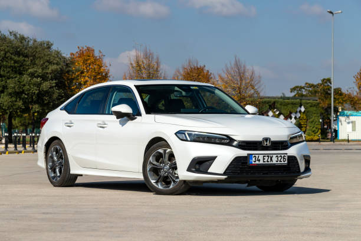
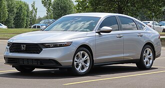
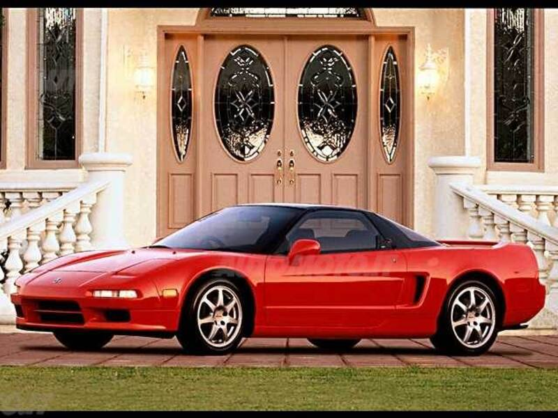
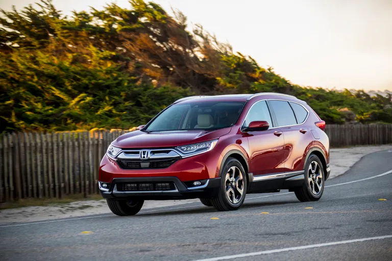
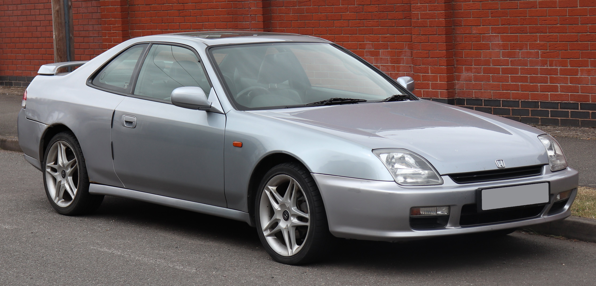

Iconic Models

Honda Civic (1972-present)
11 generations | 1972-present
The car that established Honda in the automotive world. The Civic has evolved from a small economy car to a global icon available as sedan, coupe, hatchback, and performance Type R. Known for reliability, efficiency, and engaging driving dynamics.
- CVCC engine (1975) met emissions without catalytic converter
- Type R: 306 hp, 0-60 in 5.0s
- Best-selling car in Canada for decades
- Over 50 mpg available in hybrid versions

Honda Accord
1976-present
The benchmark midsize sedan. The Accord defined the segment with its combination of quality, refinement, and value. Often named to "Best Cars" lists for decades.

Honda NSX
1990-2005 | 2016-present
The supercar that changed everything. Developed with Ayrton Senna, it matched Ferrari performance with Honda reliability and everyday usability.

Honda S2000
1999-2009
The ultimate roadster. Its 2.0L engine produced 240 hp - 120 hp per liter, a record at the time. 9,000 rpm redline and perfect 50:50 balance.

Honda CR-V
1995-present
The compact SUV that balanced car-like driving with utility. Consistently one of the best-selling SUVs in America.

Honda Prelude
1978-2001
The sporty coupe that introduced many to Honda performance. Featured four-wheel steering in later generations.